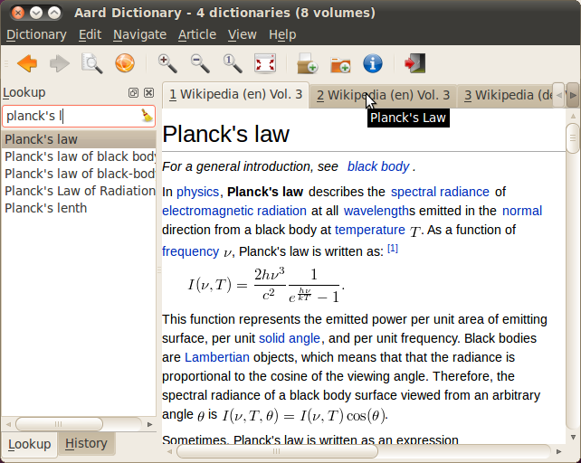
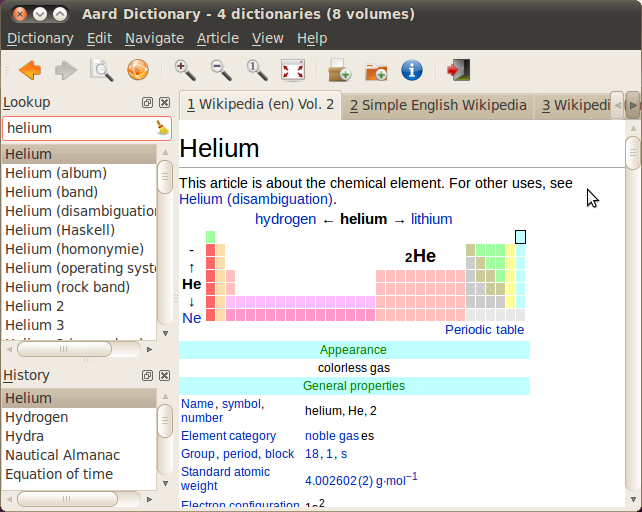
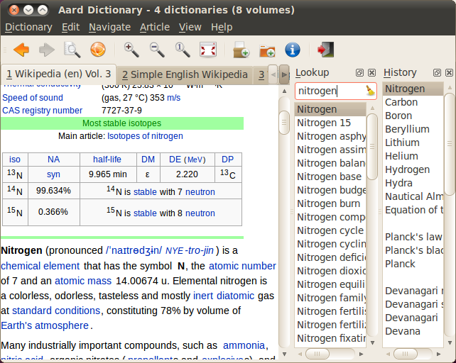
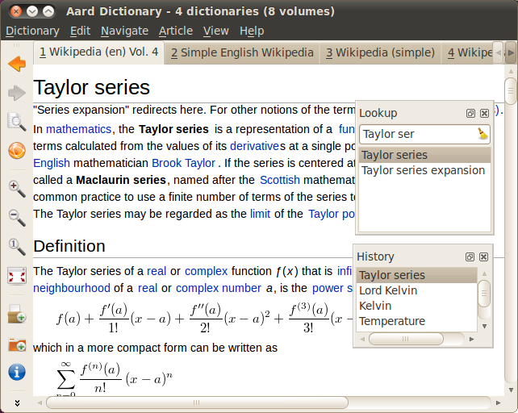
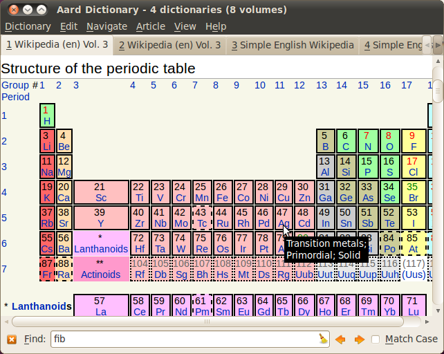
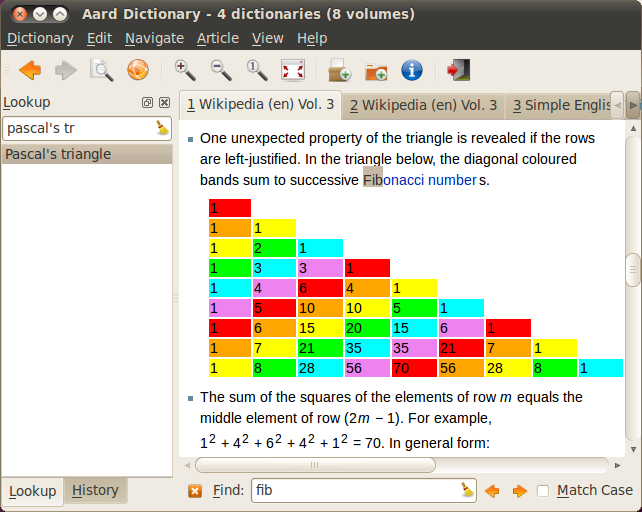
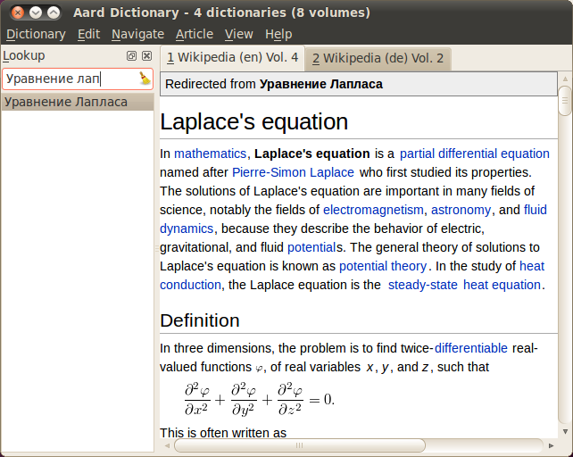
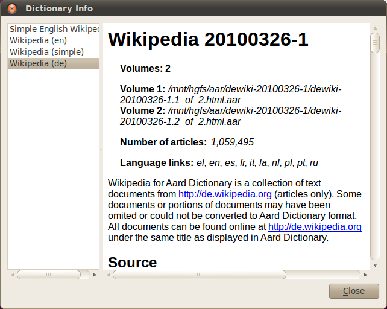
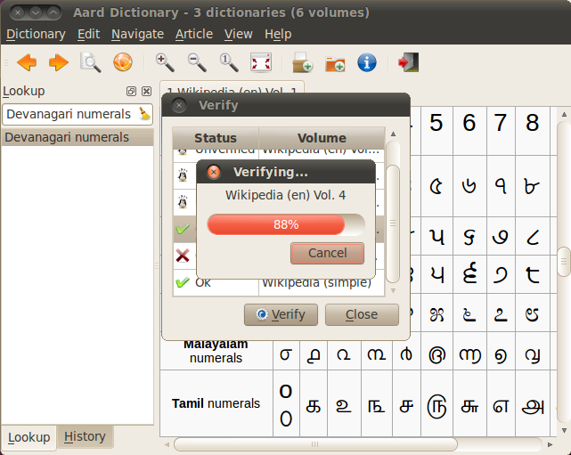

Aard Dictionary¶
Overview¶
Aard Dictionary’s user interface consists of lookup and history pane (initally grouped into tabs), article pane, toolbar and menu.
First open some dictionaries, either by selecting Dictionary ‣ Add Dictionaries or Dictionary ‣ Add Directory. Adding a directory means that Aard Dictionary will scan that directory (without subdirectories) and open any dictionaries it finds every time it is started.
Dictionaries have .aar extension.
Start typing a word to look up in Lookup Box. List of matching words appears below Lookup Box and is updated when typing is paused, best matches displayed first (at the top of the list) and first match automatically selected. Articles with similar titles found in one or more dictionaries are grouped together and are display in multiple tabs in article pane when selected.
Lookup pane, history pane and toolbar can be rearranged and moved to a new position (click pane’s title bar or toolbar’s drag handle and start dragging), either docked around article pane:
 or floating:
Lookup pane, history pane and toolbar can also be hidden (through View menu, close button in lookup and history pane’s title bar, or context menu over menu bar, tool bar or lokup and history title bars).
Article visual style can be customized with Article Appearance dialog (Article ‣ Appearance...).
See also
Article ‣ Find brings up Find bar:
Matching text in current article is selected as user types. Use Find bar’s arrow buttons or Shift+Enter/Enter to select previous/next occurence of the phrase. Hide Find bar with the close button or Esc.
Wikipedia Language Link Support¶
Many Wikipedia articles have equivalent articles in other language Wikipedias and contain corresponding inter-wiki links. Aard Dictionary compiler can optionally put corresponding article titles into dictionary’s index so that articles can be found by their titles in other languages. For example, if English Wikipedia is compiled with Russian language links, searching for Уравнение лап finds Laplace’s Equation by corresponding Russian title Уравнение Лапласа.
Note redirect title at the top.
Dictionary info dialog shows list of language link languages included into dictionarie’s lookup index.
Verifying Dictionary Data Integrity¶
When downloading or copying large data files such as Aard Dicrionary volumes data may get corrupted due to software, hardware or data transmittion error. Dictionary volumes store SHA-1 digest of the content which is used to verify data integrity. To verify volume data integrity open Verify dialog (Dictionary ‣ Verify...), select one of the volumes and click Verify button.
Once verified volume status changes from Unverified to OK or Corrupt.
Volumes can also be verified by running Aard Dictionary from the command line like this:
aarddict --verify enwiki-20090810-1.1_of_4.aar enwiki-20090810-1.2_of_4.aar
Article Appearance¶
Article appearance can be changed via Article Appearance dialog (Article ‣ Appearance...). User can switch between Wikipedia style (based on default Wikipedia skin, Monobook) and Aard style which allows to customize link colors and article text font.
New in version 0.9.1: Power users can further customize article appearance by creating and editing user.css in $HOME/.aarddict directory.
Here’s a naïve example of creating a dark color theme for articles:
body, h1, h2, h3, h4, h5, h6 {
background-color: black;
color: gray;
}
.tex {
background-color: lightgray;
padding: 5px;
}
.infobox {
display: none;
}
a:link {
color: white;
font-weight: bold;
}
a:active {
background-color: rgb(80, 80, 80);
}
User Interface Language¶
Currently Aard Dictionary user interface is available in English, Russian and Greek. User interface language should be selected automatically based on system’s locale. System settings can be overridden by starting Aard Dictionary from command line like this:
$ LANG=ru_RU.UTF-8 aarddict
If specified locale is not available this will result in GTK warning
(process:12326): Gtk-WARNING **: Locale not supported by C library.
Using the fallback 'C' locale.
followed by a stack trace and Aard Dictionary will fail to start. Corresponding locale will need to be installed. For example, in Ubuntu 9.04 the following command will fix the error:
$ sudo locale-gen ru
Fonts¶
Many dictionaries use International Phonetic Alphabet (IPA) in their articles to write phonetic transcription of a word (describe it’s pronunciation). To have IPA characters displayed properly you may need to install one of the excellent IPA fonts available at http://scripts.sil.org.
Note
Aard Dictionary 0.7.x supports special tag for marking up phonetic transcription. Font for the article text marked as phonetic transcription can be assigned through View ‣ Phonetic Font... menu.
You also may need to install additional fonts if you use dictionaries that use script not available on your system. WAZU JAPAN’s Gallery of Unicode Fonts is an excellent resource for various unicode fonts.
To install fonts on Maemo simply create /home/user/.fonts directory and copy font files there. New fonts should now appear in font selection dialogs across the system, including Phonetic Font dialog in Aard Dictionary 0.7.x.
If you don’t like to copy font files into /home/user/.fonts or don’t know how to do it you may install Doulos SIL Font package with Maemo Application Manager.
Limitations¶
- Wikipedia for Aard Dictionary doesn’t include any audio, video and images except for images rendering math.
- Wikipedia for Aard Dictionary does not include Wikipedia navigational features like categories, portals and navigation boxes.
- Only some wikipedia inter-project links work. Links that start with a prefix followed by : are resolved by looking for corresponding server url in interwiki map in dictionary’s siteinfo and finding a dictionary with that server url among open dictioneries. Siteinfo generated by Wikipedia API does not always accurately reflect prefixes actually used, so some prefixes fail to resolve. Also, links with more complex prefixes - like “w:ru:” don’t work.
- Many XDXF dictionaries have only basic or no markup in articles. Accordingly, dictionaries converted from such XDXF also have just plain text articles. Some dictionaries have simple plain text markup or formatting conventions that can be converted to proper XDXF and aard markup, but this requires a custom conversion tool which hasn’t been written yet.
Installation Notes¶
Windows¶
If starting the application results in error message like this:
This application has failed to start because the application
configuration is incorrect. Reinstalling the application may fix this
problem.
or
The application has failed to start because its side-by-side
configuration is incorrect. Please see the application event log for
more detail.
most likely Microsoft Visual C++ 2008 SP1 Redistributable Package (x86) needs to be installed.
On Windows earlier than Windows XP SP3 users may also need to install Microsoft Visual C++ 2005 Redistributable Package (x86).
Maemo¶
Aard Dictionary starting with 0.8.0 depends on PyQt4 libraries which have not been officially released for Maemo 4 (N800 and N810) and are only available in development repository. Maemo 4 users can use single click install for Maemo 5, but must enable Diablo Extras-devel repository first. Be advised that extras-devel contains potentially unstable software that is primarily intended for developers and testers.
Another issue users may encounter when installing on N800/N810 is that Aard Dictionary 0.8.0 together with PyQt4 and Qt4 libraries is approximately 23 Mb download and requires some 70 Mb of device memory. Some applications may need to be uninstalled to free enough memory for the installation.
Building Mac OS X App¶
Mac OS X application bundle can be built with py2app for Aard Dictionary 0.8.0 and newer.
Install MacPorts
Install Python 2.6:
sudo port install python26 +no_tkinter +ucs4
Change environment to make this Python version default:
sudo port install python_select sudo python_select python26
Make sure Python 2.6 you just installed runs indeed when you type python (you mae need to open a new terminal for python_select to take effect).
Install PyQT4:
sudo port install py26-pyqt4
This should bring in py26-sip and qt4-mac as dependencies. Qt4 compilation takes several hours and requires a lot of disc space (around 6-8 Gb).
Install py2app:
sudo port install py26-py2app
Install PyICU. This is a bit tricky because MacPorts 1.8.1 includes ICU 4.3.1 and PyICU doesn’t seem to build with that. It looks like py26-pyicu @0.8.1 port was added when ICU was at 4.2.0 and it probably worked then. In any case, PyICU 0.8.1 only claims to work with ICU 3.6 and 3.8, so it is best to install and activate older ICU port - 3.8.1.
Copy aarddict.py recipe (and __init__.py) for py2app from macosx to installed py2app package directory:
cp macosx/py2app/recipes/*.py /opt/local/Library/Frameworks/Python.framework/Versions/2.6/lib/python2.6/site-packages/py2app/recipes/
This recipe is same as for numpy and other libraries that have package data and won’t work if put in zip archive.
Finally, run py2app:
python setup.py py2app
Remove unused debug binaries:
find dist/ -name "*_debug*" -print0 | xargs -0 rm
A number of unused Qt frameworks gets included in final app (QtDesigner, QtSql etc.) but they can’t be removed since they are linked in _qt.so.
Pre-History¶
Aard Dictionary started from SDict Viewer code base as an attempt to address some of it’s shortcomings. Initially Jeremy Mortis started to hack on SDict Viewer and ptksdict so that he could look up words in French Wikipedia without having to type accented characters. This required changes to dictionary format. Trying to make SDict Viewer work with both the original Sdictionary format and the new format turned out to be cumbersome and limiting, so SDict Viewer was forked into a new project that can focus on building functionality around new format.
SDict Viewer Issues¶
SDict Viewer has a number of issues due to limitations of underlying Sdictionary format developed by AXMA Soft. Aard Dictionary tries to resolve them by introducing aard format.
Short Index Depth¶
Sdictionary relies on so called short index to perform word lookups. First few letters of all words in a dictionary are mapped to a pointer that points to position in full index (maximum length of a key in short index is index depth). To find a word SDict Viewer uses short index to jump to a particular place in full index and then iterates through the word list until it finds the word or encounters a word that doesn’t begin with the same letters.
This works reasonably well for small and medium sized dictionaries. Short index depth for dictionaries from http://sdict.com is 3, although the format theoretically allows deeper short index. With large dictionaries like Wikipedia short index of depth 3 is not enough: SDict Viewer sometimes ends up iterating through tens or even hundreds of thousands words, which takes significant amount of time even on powerful desktop machines.
SDict Viewer tries to alleviate this problem by building additional short index on the fly as it iterates through corresponding word list fragment, so that subsequent lookups in that fragment of word list are fast. This, however, significantly slows down first lookup.
Reading and parsing short index when opening a dictionary is in itself a time consuming operation. SDict Viewer saves binary dump of short index on application exit, which speeds up subsequent loads of corresponding dictionary. This, however, requires certain amount of storage and memory at runtime. Size of short index may grow noticeably - depending on how “under-indexed” a particular dictionary is and how often it is used.
Article Formatting¶
Sdictionary format uses several HTML-style tags to mark up dictionary article text. Sdictionary compiler doesn’t escape special characters like < and >, doesn’t produce well-formed markup, doesn’t produce clean article text. Parsing such article text on Nokia Internet Tablets is not very fast and doesn’t always produce nice-looking results.
Hyperlinks¶
Sdictionary format defines <r> tag to mark regions of text that are links (references) to other entries in the same dictionary. There is, however, no facility to specify link target, so this mechanism breaks when link target is not exactly the same as corresponding text in the article. There is no support for external (http://) links. SDict Viewer treats all strings that start with http:// as external links, this slows down article formatting.
Compression¶
Sdictionary format theoretically has three options for compressing dictionary data: no compression, gzip and bzip2. In practice all dictionaries actually use gzip. Sdictionary compiler doesn’t actually allow to create bzip2 compressed dictionaries.
Contributors¶
- Jeremy Mortis (initial Aard Dictionary file format design and implementation, initial dictionary compiler implementation)
- Sam Tygier (patches, ideas, BitTorrent tracker)
- Jennie Petoumenou (Greek translation, testing)
- Iryna Gerasymova (Aard Dictionary logo, testing)
- Igor Tkach (SDict Viewer and Aard Dictionary author)
Reporting Issues¶
Please submit issue reports and enhancement requests to Aard Dictionary issue tracker.
Changes¶
0.9.2¶
- Keyboard focus is no longer automatically transferred to article view when word is selected in word completion list (issue #18)
- Transfer keyboard focus to article view when word is activated in word completion list or history
- Fix aarddict’s command line verify, identify and metadata operations (issue #16)
- Windows installer no longer installs URL shortcuts to Aard Dictionary’s web site and forum (issue #17)
0.9.1¶
- Improve full screen mode: show only article tabs, hide everything else.
- Update Wikipedia style so that article content has some margin around it, like in Aard style.
- Make application shortcuts work regardless of whether menubar or toolbar are visible. This was affecting Maemo users since menubar is not displayed there and toolbar doesn’t have all actions and can be turned off.
- Fix article CSS to not hide content of pre elements
- Control+,/Ctrl+. for previous/next article no longer prints ,/. when in lookup or find input field and corresponding action is disabled
- Show status message in the middle of tab widget for lookup in progress and when lookup didn’t yield any results
- Load user-defined article style (CSS) from $HOME/.aarddict/user.css.
- Use Ctrl+Shift+F instead of F11 as shortcut for full screen toggle on Mac.
0.9.0¶
- Implement ability to find text in article (Article ‣ Find...).
- Implement ability to select aticle text font when not using Wikipedia style (issue #7)
- Add menu Edit with new action to look up currently selected text (Edit ‣ Lookup) and standard editing actions applied to currently focused widget (Lookup box, Find or article view).
- Articles found by following a redirect now show redirect info at the top.
- Articles are now loaded only when their tab is selected.
- Improve history: remember preferred dictionaries order, remember scroll position of recent articles.
- Add basic support for inter-wiki links (see Limitations).
- Replace Lookup Box action button inside lookup box with a Clear button, make it look better.
- Revise application state and settings persistence implementation to better support new features (improved history, customizable article font). State saved by 0.8.0 is ignored.
- Rearrange menus, add new shortcuts.
- Remove support for JSON article format.
0.8.0¶
- UI rewritten in PyQt/Qt.
- Customizable UI components layout.
- Improve keyboard navigation.
- Improve article rendering.
- Add toolbar.
- Use single word completion list instead of word list per language, show best match at the top.
- In word list group similar titles together (titles that differ only in case or accented characters except for one and two-letter titles).
- Render articles in both old JSON-based format (.aar dictionaries) and HTML (.html.aar dictionaries).
- Switch between Aard Dictionary article visual style with customizable colors and Wikipedia Monobook style.
- Implement Article ‣ Save action: saves article to HTML file.
- Implement Dictionary ‣ Add Directory...: adds directory to be scanned for dictionaries on application start, opens all dictionaries found (non-recursive).
- Display list of language link languages in dictionary info dialog.
- Build Mac OS X application bundle.
0.7.6.1¶
- Fix Open... to work in both Maemo 4 and Maemo 5
0.7.6¶
- Include license, documentation, icons and desktop files in source distribution generated by setup.py.
- Added ability to open online Wikipedia article in a browser (Navigate ‣ Online Article) and to copy article URL (Dictionary ‣ Copy ‣ Article URL).
- Open all volumes of the same dictionary when one volume is open if other volumes are in the same directory.
- Fixed auto selecting article from most recently used dictionary (this didn’t always work with multi volume dictionaries since volume id was used instead of dictionary id).
- Remove Control-f key binding for history forward and Control-b for history back in Hildon UI, use Shift-Back and Back instead.
- Windows version now uses Python 2.6.
- Windows installer updated: by default Aard Dictionary now goes into Aard Dictionary group, shortcuts to web site, forum, and uninstaller are created.
0.7.5¶
- Added command line option to print dictionary metadata.
- Language tabs scroll when dictionaries in many languages are open.
- Display Wikipedia language code in article tab title.
- When article found in multiple dictionaries select tab with article from most recently used dictionary (issue #1).
- Added ability to verify dictionary data integrity: Dictionary ‣ Verify.
- Fixed redirects: some redirects previously were resolving incorrectly because weak string matching (base characters only) was used.
- Added ability to select string matching strength: Dictionary ‣ Match.
- Render previously ignored dd tag often used in Wikipedia articles in serif italic font.
- Implemented links to article sections (issue #6).
- Highlight current item in word lookup history dropdown list.
- Better lookup history navigation: previously if link followed was already in history that history item whould be activated resulting in confusing result of subsequent Back or Forward actions.
- Link sensitivity tweaks to reduce unintended clicks when finger scrolling articles on tablet.
- Fixed handling of articles with multiple tables in same position (resulted in application crash on Windows).
- Properly limit matched word list for multivolume dictionaries.
- Python 2.5 .deb is now installable on Ubuntu 8.04 LTS.
0.7.4¶
- Customizable table rows background
- Added Russian translation
0.7.3¶
0.7.2¶
0.7.1¶
- Better redirects.
- Better dictionary information display in info dialog and window title.
- Added Lookup Box action - move focus to word input field and select it’s content (bound to Ctrl+L).
- Place cursor at the beginning of article text buffer - helps make Maemo bug 2469 less annoying (scrolling to cursor on every text view size change).
- Fixed glitch in articles tabs display (event box for articles tab labels wasn’t invisible, looked bad on Maemo and Windows).
0.7.0¶
Initial release. Changes compared to SDict Viewer:
Major user visible differences:
- Lenient search (case-insensitive, ignores secondary differences like accented characters)
- Faster startup, faster word lookup
- Better link representation in articles, footnote navigation inside article
- Better word lookup history navigation
- Updated UI